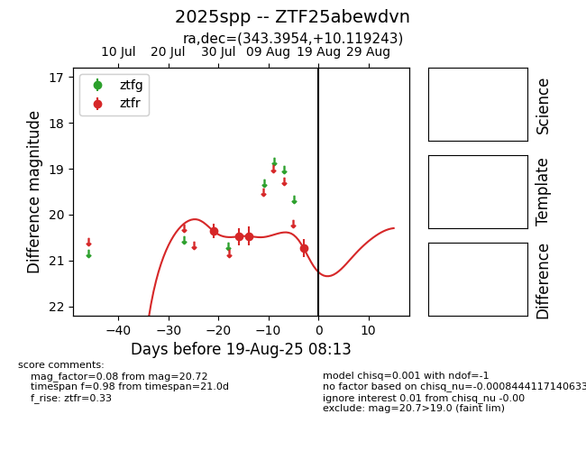

Target 2025spp at 2025-08-19 08:13, see:
FINK: fink-portal.org/2025spp
Lasair: lasair-ztf.lsst.ac.uk/objects/2025spp
ALeRCE: alerce.online/object/2025spp
TNS: wis-tns.org/object/2025spp
YSE: ziggy.ucolick.org/yse/transient_detail/2025spp
alt names
ZTF25abewdvn (ztf,fink)
2025spp (tns,yse)
coordinates:
equatorial (ra, dec) = (343.3954,+10.11924)
galactic (l, b) = (81.4258,-43.05590)
photometry
last ztfr=20.72
4 ztfr detections
